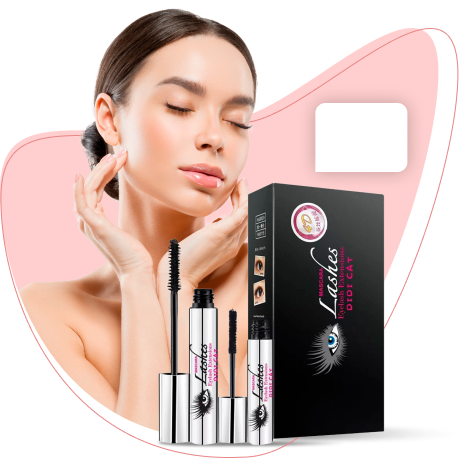
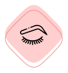

Un mascara unico! Charming Lash Sviluppato con la tecnologia 4D, dà volume alle ciglia, le rende più lunghe, più curve e le tinge accuratamente dalle radici. Il tuo sguardo diventa espressivo e luminoso. Per un "effetto gatta" seducente e glamour.
Mascara

39€ 78€
Per uno sguardo che colpisce!
 Effetto incurvante